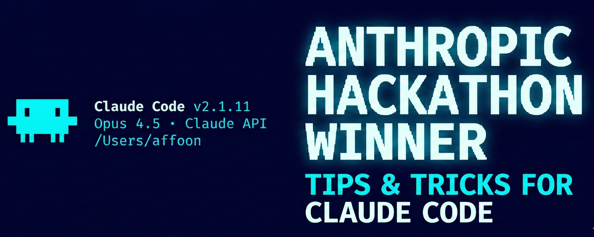
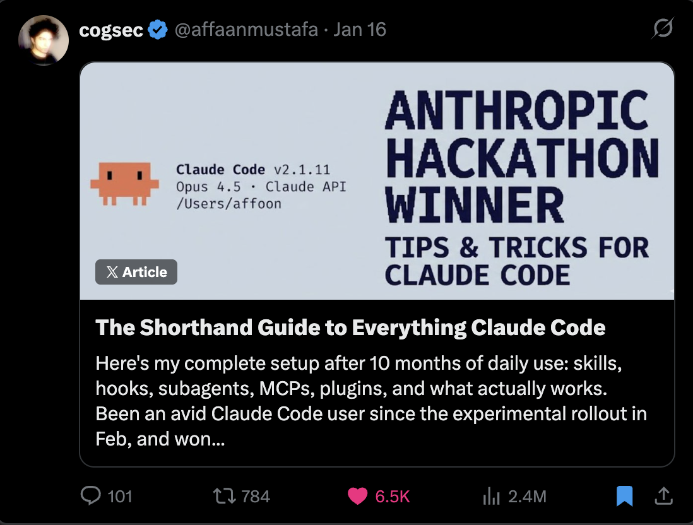
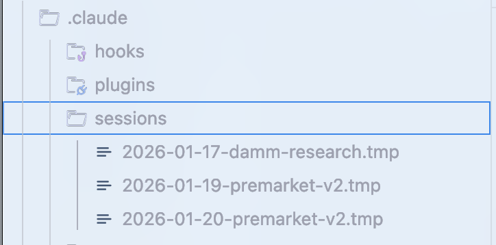
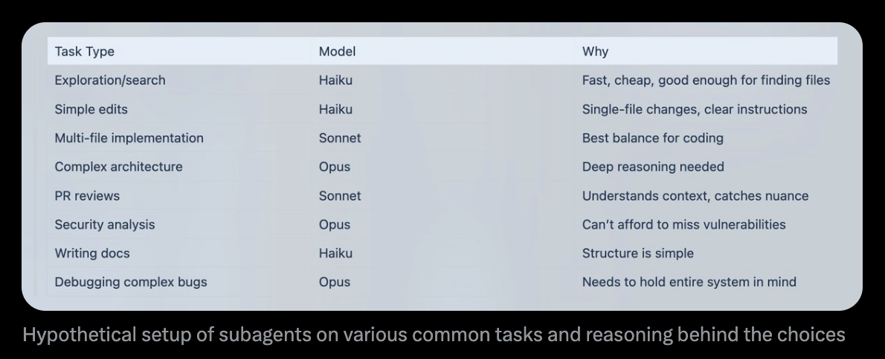
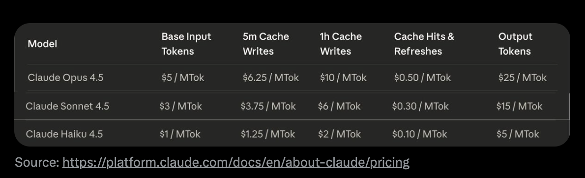
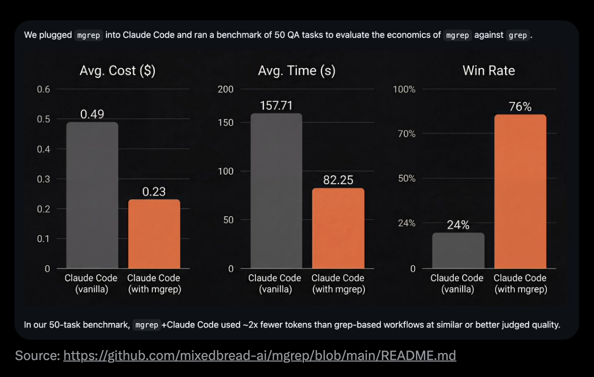
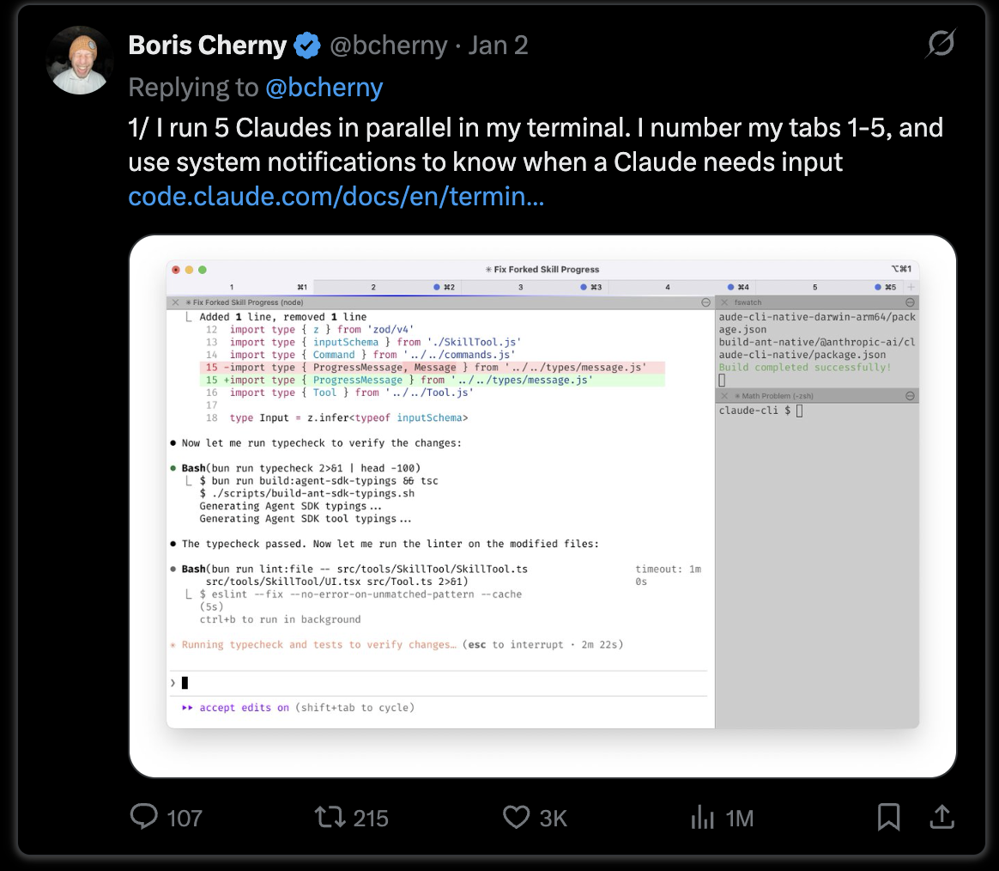
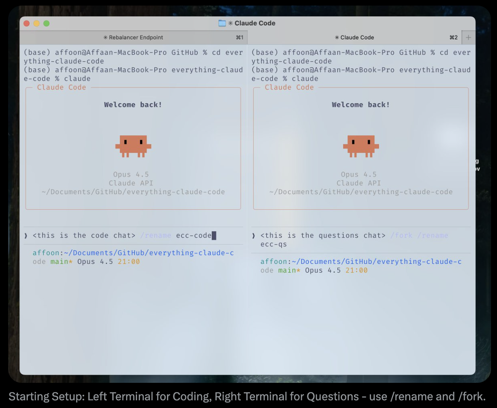

The Longform Guide to Everything Claude Code

Prerequisite：本指南建立在 The Shorthand Guide to Everything Claude Code 之上。若尚未配置 skills、hooks、subagents、MCPs 和 plugins，请先读那一篇。

The Shorthand Guide — 请先读它
原文：the-longform-guide.md · 配置仓库：affaan-m/ECC / everything-claude-code
在 shorthand guide 里，我讲了基础 setup：skills 和 commands、hooks、subagents、MCPs、plugins，以及构成有效 Claude Code workflow 骨架的配置模式。那是 setup 指南和基础设施。
这篇 longform guide 深入讲那些能区分「高效 session」与「浪费 session」的技巧。若还没读 shorthand guide，先回去把 configs 配好。下文默认你已经把 skills、agents、hooks、MCPs 配好并能用。
主题包括：token economics、memory persistence、verification patterns、parallelization strategies，以及构建可复用 workflows 的 compound effects。这些是我日常用了 10+ 个月后打磨出来的模式——差别在于：是第一小时就陷入 context rot，还是能连续数小时保持高效。
shorthand 与 longform 指南里覆盖的内容都在 GitHub：github.com/affaan-m/everything-claude-code
Tips and Tricks
有些 MCPs 可以替换，从而腾出 Context Window
对于 version control（GitHub）、databases（Supabase）、deployment（Vercel、Railway）这类 MCPs——多数平台已有成熟 CLI，MCP 本质上只是在包一层。MCP 是不错的 wrapper，但有代价。
若想让 CLI 用起来更像 MCP，又不真正加载 MCP（以及随之缩小的 context window），可把功能收进 skills 和 commands。把 MCP 暴露的那些「好用」tools 抽出来，做成 commands。
例如：不要一直加载 GitHub MCP，而是建一个 /gh-pr command，包装 gh pr create 并带上你偏好的 options。不要让 Supabase MCP 吃掉 context，改用直接调用 Supabase CLI 的 skills。
有了 lazy loading，context window 问题大体解决了；但 token 用量和成本并没有同样解决。CLI + skills 仍然是一种 token optimization 手段。
IMPORTANT STUFF
Context and Memory Management
要跨 session 共享 memory，最稳的做法是：用 skill 或 command 做进度总结与 check-in，写到 .claude 目录下的 .tmp 文件，并在整个 session 里持续 append。第二天可以用它当 context 接着干；每个 session 建新文件，避免把旧 context 污染进新工作。

session storage 示例 → https://github.com/affaan-m/everything-claude-code/tree/main/examples/sessions
Claude 会写一份总结当前状态的文件。你审一遍，需要就改，然后开新对话。新 conversation 只要给出文件路径即可。在撞上 context limits、又要继续复杂工作时特别有用。这些文件应包含：
- 哪些 approaches 有效（有可验证的 evidence）
- 哪些 approaches 试过但无效
- 哪些还没试、以及还剩什么要做
Clearing Context Strategically：
一旦 plan 定好并清掉 context（现在 Claude Code 的 plan mode 里这是默认选项），就可以按 plan 执行。适合你已经堆了大量对执行不再有用的 exploration context 时。若要做战略级 compacting，关掉 auto compact；在合理节点手动 compact，或写一个 skill 替你做。
Advanced: Dynamic System Prompt Injection
一个我用过的模式：不要只把所有内容塞进 CLAUDE.md（user scope）或 .claude/rules/（project scope）——那些每个 session 都会加载——而是用 CLI flags 动态注入 context。
claude --system-prompt "$(cat memory.md)"这样可以对「什么时候加载什么 context」更精细。System prompt 的权威性高于 user messages，user messages 又高于 tool results。
Practical setup：
# Daily development
alias claude-dev='claude --system-prompt "$(cat ~/.claude/contexts/dev.md)"'
# PR review mode
alias claude-review='claude --system-prompt "$(cat ~/.claude/contexts/review.md)"'
# Research/exploration mode
alias claude-research='claude --system-prompt "$(cat ~/.claude/contexts/research.md)"'Advanced: Memory Persistence Hooks
有些多数人不知道的 hooks 能帮 memory：
- PreCompact Hook：在 context compaction 发生前，把重要状态存到文件
- Stop Hook (Session End)：session 结束时，把 learnings 持久化到文件
- SessionStart Hook：新 session 时，自动加载之前的 context
我写过这些 hooks，在仓库里：github.com/affaan-m/everything-claude-code/tree/main/hooks/memory-persistence
Continuous Learning / Memory
如果你反复发同样的 prompt，而 Claude 又撞上同样的问题、或给出你听过的回答——这些 patterns 必须 append 进 skills。
The Problem： 浪费 tokens、浪费 context、浪费时间。
The Solution： 当 Claude Code 发现非平凡的东西——debugging 技巧、workaround、项目特有 pattern——就把它存成新 skill。下次类似问题出现时，skill 会自动加载。
我写过一个 continuous learning skill：github.com/affaan-m/everything-claude-code/tree/main/skills/continuous-learning
Why Stop Hook（而不是 UserPromptSubmit）：
关键设计是用 Stop hook，而不是 UserPromptSubmit。UserPromptSubmit 每条消息都跑——给每次 prompt 加 latency。Stop 在 session 结束时跑一次——轻量，不拖慢 session 过程。
Token Optimization
Primary Strategy: Subagent Architecture
优化你用的 tools，以及 subagent architecture：把任务委派给「够用且最便宜」的 model。
Model Selection Quick Reference：

常见任务上 subagents 的假想配置，以及选型理由
| Task Type | Model | Why |
|---|---|---|
| Exploration/search | Haiku | Fast, cheap, good enough for finding files |
| Simple edits | Haiku | Single-file changes, clear instructions |
| Multi-file implementation | Sonnet | Best balance for coding |
| Complex architecture | Opus | Deep reasoning needed |
| PR reviews | Sonnet | Understands context, catches nuance |
| Security analysis | Opus | Can't afford to miss vulnerabilities |
| Writing docs | Haiku | Structure is simple |
| Debugging complex bugs | Opus | Needs to hold entire system in mind |
90% 的 coding 任务默认用 Sonnet。在首次尝试失败、任务跨 5+ 文件、涉及 architectural decisions、或 security-critical code 时，再升到 Opus。
Pricing Reference：

来源：https://platform.claude.com/docs/en/about-claude/pricing
Tool-Specific Optimizations：
用 mgrep 替换 grep——相对传统 grep 或 ripgrep，平均约少 ~50% tokens：

在我们的 50-task benchmark 里，mgrep + Claude Code 相对 grep-based workflows，在相近或更好的 judged quality 下大约少用 ~2x tokens。来源：mgrep by @mixedbread-ai
Modular Codebase Benefits：
更模块化的 codebase——主文件几百行而不是几千行——既有利于 token optimization / 成本，也更容易第一次就把任务做对。
Verification Loops and Evals
Benchmarking Workflow：
对比「有 skill」和「没有 skill」对同一请求的输出差异：
Fork conversation，在其中一个里开新 worktree 且不带该 skill，最后拉 diff，看记了什么。
Eval Pattern Types：
- Checkpoint-Based Evals：设明确 checkpoints，按既定 criteria 校验，通过再继续
- Continuous Evals：每 N 分钟或重大变更后跑一次，全量 test suite + lint
Key Metrics：
pass@k: At least ONE of k attempts succeeds
k=1: 70% k=3: 91% k=5: 97%
pass^k: ALL k attempts must succeed
k=1: 70% k=3: 34% k=5: 17%只要「能跑通」就用 pass@k；需要一致性时用 pass^k。
PARALLELIZATION
在 multi-Claude terminal 里 fork conversations 时，确保 fork 与原 conversation 的 action scope 划清。代码改动尽量少重叠。
My Preferred Pattern：
主 chat 做 code changes；forks 用来问 codebase / 当前状态，或调研外部服务。
On Arbitrary Terminal Counts：

Boris（Anthropic）谈跑多个 Claude instances
Boris 有并行化建议，例如本地 5 个 Claude、上游 5 个。我不建议设任意数量的 terminals。加一个 terminal 应出于真实需要。
目标应是：用最小可行的 parallelization，能完成多少事。
Git Worktrees for Parallel Instances：
# Create worktrees for parallel work
git worktree add ../project-feature-a feature-a
git worktree add ../project-feature-b feature-b
git worktree add ../project-refactor refactor-branch
# Each worktree gets its own Claude instance
cd ../project-feature-a && claude若开始扩 instances，且多个 Claude 在改会互相重叠的代码，就必须用 git worktrees，并为每个实例写清计划。用 /rename <name here> 给所有 chats 命名。

起步 Setup：左 Terminal 写代码，右 Terminal 提问 — 用 /rename 和 /fork
The Cascade Method：
跑多个 Claude Code instances 时，用 "cascade" 组织：
- 新任务开到右边的新 tabs
- 从左到右扫，从旧到新
- 同时最多专注 3–4 个任务
GROUNDWORK
The Two-Instance Kickoff Pattern：
我自己的 workflow：空 repo 开场时，开 2 个 Claude instances。
Instance 1: Scaffolding Agent
- 搭 scaffold 和 groundwork
- 建 project structure
- 配 configs（CLAUDE.md、rules、agents）
Instance 2: Deep Research Agent
- 连上你的 services、web search
- 写详细 PRD
- 画 architecture mermaid diagrams
- 整理 references，附真实文档摘录
llms.txt Pattern：
很多文档站进 docs 页后，可用 /llms.txt 拿到 llms.txt（若有）。那是更干净、对 LLM 友好的文档版本。
Philosophy: Build Reusable Patterns
来自 @omarsar0：「Early on, I spent time building reusable workflows/patterns. Tedious to build, but this had a wild compounding effect as models and agent harnesses improved.」
值得投入的：
- Subagents
- Skills
- Commands
- Planning patterns
- MCP tools
- Context engineering patterns
Best Practices for Agents & Sub-Agents
The Sub-Agent Context Problem：
Sub-agents 存在的意义是省 context：返回 summaries，而不是把一切 dump 回来。但 orchestrator 有 sub-agent 没有的 semantic context。Sub-agent 只知道字面 query，不知道请求背后的 PURPOSE。
Iterative Retrieval Pattern：
- Orchestrator 评估每一次 sub-agent 的返回
- 接受前先追问 follow-up
- Sub-agent 回 source 再取答案，再返回
- 循环到足够为止（最多 3 轮）
Key： 传 objective context，而不只是 query。
Orchestrator with Sequential Phases：
Phase 1: RESEARCH (use Explore agent) → research-summary.md
Phase 2: PLAN (use planner agent) → plan.md
Phase 3: IMPLEMENT (use tdd-guide agent) → code changes
Phase 4: REVIEW (use code-reviewer agent) → review-comments.md
Phase 5: VERIFY (use build-error-resolver if needed) → done or loop backKey rules：
- 每个 agent 拿 ONE 个清晰 input，产出 ONE 个清晰 output
- Outputs 成为下一 phase 的 inputs
- 不要跳 phases
- Agents 之间用
/clear - 中间 outputs 存进文件
FUN STUFF / NOT CRITICAL JUST FUN TIPS
Custom Status Line
可用 /statusline 设置——Claude 会说你还没有，但可以帮你配，并问你想要什么。
另见：ccstatusline（社区项目，自定义 Claude Code status lines）
Voice Transcription
用语音跟 Claude Code 说话。对很多人比打字更快。
- Mac 上可用 superwhisper、MacWhisper
- 即使转录有错，Claude 也能理解 intent
Terminal Aliases
alias c='claude'
alias gb='github'
alias co='code'
alias q='cd ~/Desktop/projects'Milestone
不到一周 25,000+ GitHub stars
Resources
Agent Orchestration：
- claude-flow — 社区企业级 orchestration 平台，54+ specialized agents
Self-Improving Memory：
- 见本仓库
skills/continuous-learning/ - rlancemartin.github.io/2025/12/01/claude_diary/ — Session reflection pattern
System Prompts Reference：
- system-prompts-and-models-of-ai-tools — 社区收集的 AI system prompts（110k+ stars）
Official：
- Anthropic Academy: anthropic.skilljar.com
References
- Anthropic: Demystifying evals for AI agents
- YK: 32 Claude Code Tips
- RLanceMartin: Session Reflection Pattern
- @PerceptualPeak: Sub-Agent Context Negotiation
- @menhguin: Agent Abstractions Tierlist
- @omarsar0: Compound Effects Philosophy
两篇指南的内容都在 GitHub：everything-claude-code